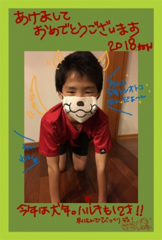
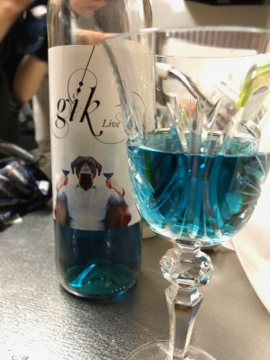
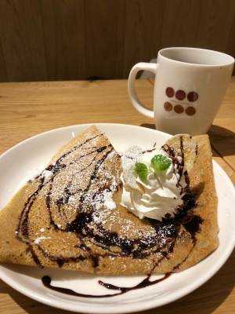
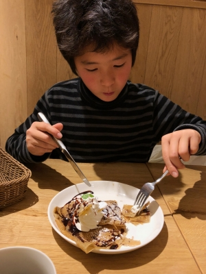
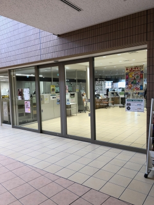
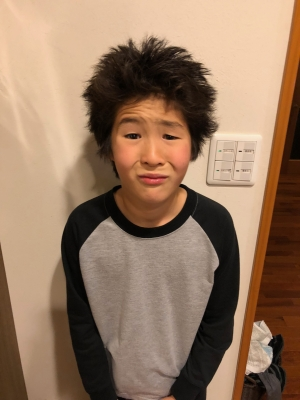
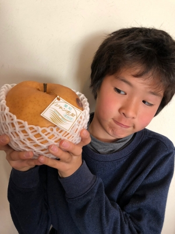
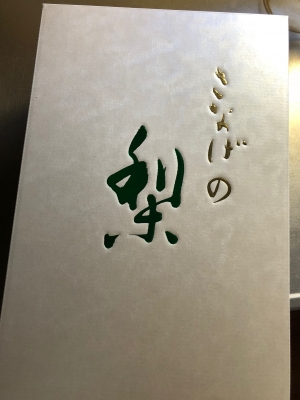

明けましておめでとうございます。 2018年
明けましておめでとうございます〜。

今年もよろしくお願いします。
てゆーか !
いつの間にか年が明けちゃったよぅ(汗)。
毎年年末年始は忙しいけど、今年は特別でした〜・・・。
12月25日(月)
午前中 10時30分〜12時 サッカーEGOスクール短期教室
夕方から KUMON
この日、短期教室が始まる直前、寒かったせいでしょうか
・・・ハル、ふともものひざに近い部分を痛めたようです(汗)。
夕方KUMONから帰った後、病院に行ってきました。
レントゲンを撮っていただいたんですが重篤なケガの兆候はありませんでした。
様子を見つつ、練習は続けて大丈夫だと診断されました。
ただ別件で・・・ひざに痛みは出ていませんが、
オスグッドがあるって言われちゃったよ〜。
やっぱりストレッチはきちんとしなきゃだね・・・。
ハルも、もレントゲン写真を見せられ、
先生にはっきり言われたことでちょっと「やばい〜」って思ったみたいです(笑)。
12月26日(火)
10時30分〜12時 サッカーEGOスクール短期教室
夕方から 友だちのお宅でなべパーティー
午前中の短期教室は「痛かったらムリしない」で休み休みの参加でした。
冬だし寒いのでムリはせず・・・ですね〜。
お昼ご飯を食べて、なべパーティーの買い出しをして友だちのお宅へ〜。
ハルのサッカー友だち3人とお母さんでわいわいなべをつつきました。
この日はそのままお泊まりさせてもらう予定だったので
そのまま飲み会に突入〜 (笑) 珍しい青いワインをいただきましたよ〜 !

なんかね・・・↑青い色を付けてるんじゃなくて、天然の色素なんだそうですよ。
みんな翌日の予定があったので日付が変わる頃には寝ました(笑)。
ホントはヤツらは10時頃には寝て欲しかったんだけど
みんな一緒に雑魚寝(笑)で楽しいもんね・・・しょうがないか〜。
12月27日(水)
10時30分〜12時 サッカーEGOスクール短期教室
15時50分〜17時20分 サッカークーバー短期教室
前日の短期教室の後、膝上の筋肉を保護するサポーターを購入したので
この日はシップをしてサポーターを付けて短期教室に参加しました。
サポーターが役に立ってくれたか ? この日の練習は最後まで休まず行けました〜。
お昼に午前の練習が終わって、午後からの練習までに時間があったので、
大高のイオンに行って来ました〜(笑)。


冬休みのイオンなんて、すんげー混んでると思ってたけど、
思ったよりも混んでなかったデス(笑)。
ご飯食べて、ペットショップでわんこ見て(笑)、ちょっとした買い物して
次の予定の時間まで過ごしました。
・・・ホントは一度家に帰れたらよかったんですけどね・・・。
午前の短期は刈谷、午後からの短期は大府。
我が家は武豊なので、往復の時間を考えると帰れなかった・・・(笑)。
結果、家に帰ったのは夜の7時前・・・長い1日だったわぁぁ(汗)。
12月28日(木)
10時30分〜12時 サッカーEGOスクール短期教室
15時50分〜17時20分 サッカークーバー短期教室
この日も前日と同じタイムスケジュール。
でも実は、予定では「トリプル」の予定だったんですよ〜 !! (恐)
19時30分〜20時50分 amaro ss 通常練習
だって〜 ! ハルが「トリプルでもだいじょーぶ !! 」なんてゆーんだよぅぅぅ(泣)。
・・・いやいやいや(汗)、前日のこと考えると絶対ムリでしょ(汗)。
ヤツもムリだと思うけど、そもそもあたしがムリーっ !!
・・・午前と午後の間の空き時間には大府の図書館に行って来ましたよ。

↑大府の新しい図書館、貸し出し件数日本一だそうですよ。
なにも知らずに行ったんですけどね。
とてもキレイで広くて見やすい図書館でした〜。
12月29日(金)
10時30分〜12時 サッカーEGOスクール短期教室
12時〜16時30分 amaro ss 蹴り納めトレーニングマッチ
EGO短期は最終日はゲームデーで、2つのチームに分かれて
時間まで試合しまくり(笑)の、ヤツらにとって楽しくて仕方ない日デス(笑)。
ホントはね、短期教室の課題になったことが確認できる時間になったら
最高なんだけど(笑)、ヤツらはとにかくゲームが大好きなんだよね。
ヤツらが1点を争って必死になる姿は、
見ている親もやっぱりわくわくして楽しいです。
午後から移動して参加した amaro ss は、去年のお正月から
ハルがお世話になった先生が立ち上げたサッカースクールです。
蹴り納めってことなのでイベントなんですが、
中学生も参加してくれてたので勉強にもなったよね(笑)。
ハルは足のケガもあったので、様子を見つつ楽しんでたみたいデス。
そして30日、31日は掃除に、買い物に、正月準備にわたわたして(笑)、
紅白を見ながら慌ただしく年賀状を作って(汗)、

↑
・・・ハルはこんな感じで床屋にも行けず(汗)
ダサいぼさぼさ頭で正月元旦を迎えました(笑)。

↑
こちらお歳暮の頂き物のジャンボ梨デス(笑)。
ハルの顔くらいあるよ ! びっくり〜。
こんな梨初めて見ました。
猿投の梨だって〜
↓

1月1日(月)は、実家に挨拶に行って来ました。
ハルのいとこもやってきて、賑やかなお正月の会食になりました。
・・・ばあばが、すんげー大量の食材を用意していて
めっちゃ食べ過ぎたよ・・・まじで正月やばいわ・・・。
そして本日
1月2日(火)、ようやくPCの前に座る時間が取れました。
今年の冬休みって、連休の関係でいつもの年より長いんだよね・・・。
なんだけど、もう今週末にはハルの公式戦がひかえていて
なんかいつも以上に慌ただしい感じがします・・・。
1月5日(金)からは、ダンナは通常営業に戻り出勤ですし
ハルも夜はサッカーの通常練習が始まります。
明日からは1泊2日でスキーに行って来まーす。
あぁ、忙しいなぁぁぁ〜(笑)。